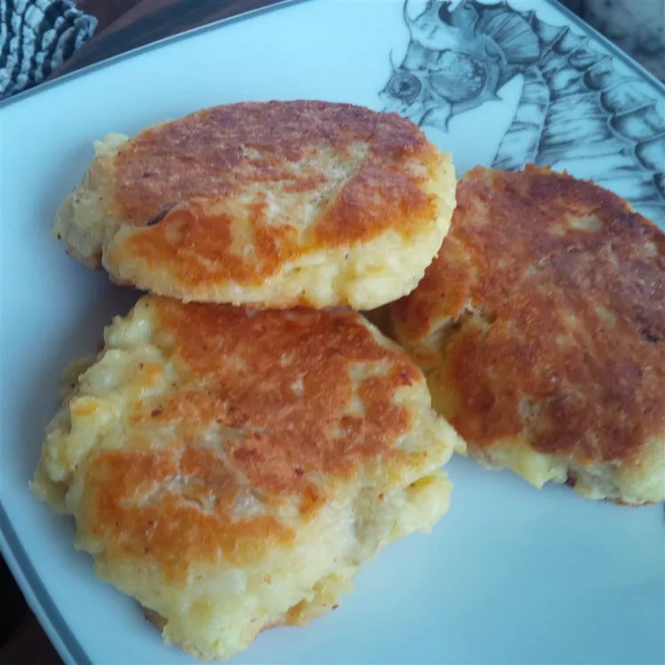

Hashbrown

Description
Ingredients
- 1 large egg, beaten
- 2 cups mashed potatoes
- 1 onion, finely diced
- ½ teaspoon salt
- ¼ teaspoon ground black pepper
- 2 tablespoons olive oil
- ¼ cup fresh basil leaves, torn (Optional)
Steps
- Beat egg in a medium mixing bowl. Mix in mashed potatoes and onion. Season with salt and pepper.
- Heat olive oil in a medium frying pan over medium heat. Scoop potato mixture into the frying pan in 4-inch circles. Pat with a spatula to flatten the mounds to approximately 1/2 to 1 inch thick.
- Cook until bottom is browned. Flip the patty over and brown on the other side.
Home